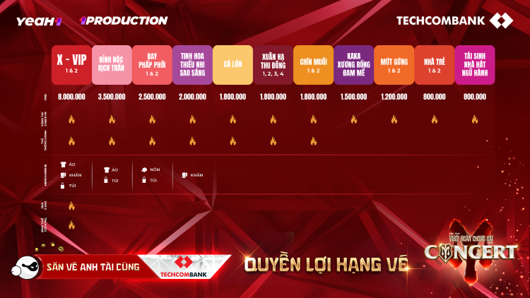
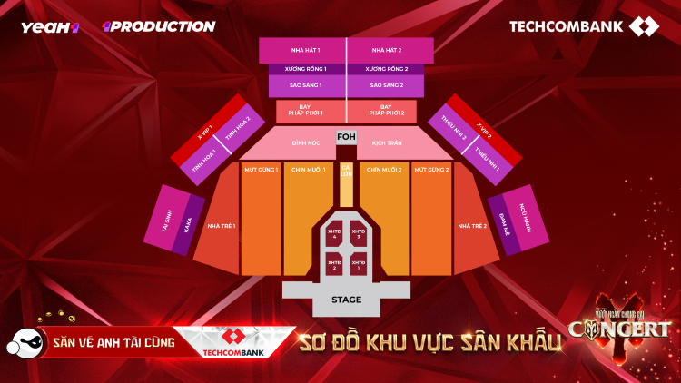
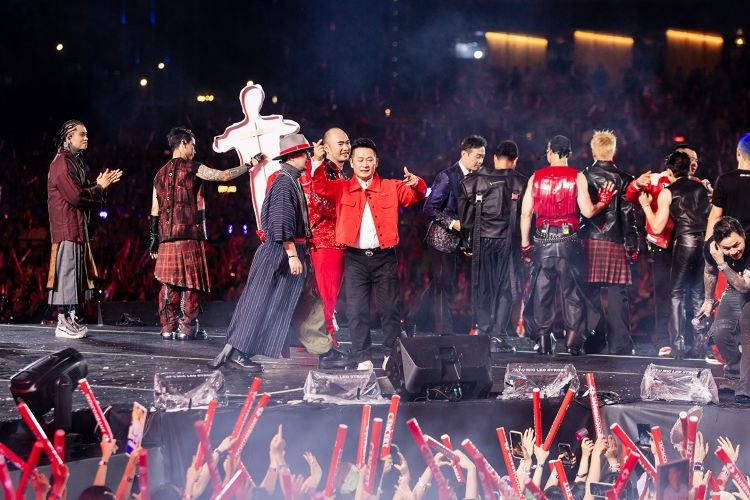

It's Official: Call Me By Fire Concert Confirmed to Take Place in Hanoi this December!
Posted : December 1, 2024The Call Me By Fire Concert 2024 in Hanoi offers three ticket types: standing, seated, and VIP lounge, with 11 ticket categories at varying prices. The most affordable ticket is priced at 800,000 VND, while the highest ticket costs 8,000,000 VND.
The specific prices for each ticket category are as follows: Standing tickets: Cá Lớn & Xuân Hạ Thu Đông 1, 2, 3, 4: 1,800,000 VND/ticket Mứt Gừng 1, 2: 1,200,000 VND/ticket Nhà Trẻ 1, 2: 800,000 VND/ticket Seated tickets: Đỉnh Nóc & Kịch Trần: 3,500,000 VND/ticket Bay Phấp Phới 1, 2: 2,500,000 VND/ticket Tinh Hoa, Sao Sáng, Thiếu Nhi: 2,000,000 VND/ticket KaKa, Xương Rồng, Đam Mê: 1,500,000 VND/ticket Tái Sinh, Nhà Hát, Ngũ Hành: 800,000 VND/ticket VIP tickets: X-VIP 1, 2: 8,000,000 VND/ticket (sold as a 10-ticket combo)
Accordingly, each ticket category for the Call Me By Fire Concert 2024 in Hanoi offers different benefits. For example, the VIP lounge area includes tables and chairs to enjoy cocktails, 5-star standard F&B (food and beverage), as well as merchandise such as t-shirts, hats, bags, towels, access passes, and check-in wristbands.
The Call Me By Fire Concert 2024 in Hanoi will take place on December 14th at Vinhomes Ocean Park 3 and will officially open ticket sales on the Ticketbox platform at 10:00 AM on Tuesday, November 12, 2024. To secure tickets for the upcoming concert, fans can choose from two options: purchase tickets through the Ticketbox platform or participate in the "ticket hunting" programs with Techcombank. The details are as follows: Option 1: Participate in the "ticket hunting" through two special programs from Techcombank – the co-investor of the Call Me By Fire Concert 2024 in Hanoi. These programs are "Anh Tai Ticket Hunting Program" and "Free Tickets for the Concert Program". Option 2: Purchase tickets via the official ticket sales platform, Ticketbox, available on both the website and the Ticketbox app.
Previously, during the ticket sales for the concert in Ho Chi Minh City, all tickets distributed on the Ticketbox platform were sold out within just 90 minutes, covering ticket categories ranging from 800,000 VND to the highest ticket price of 8,000,000 VND.
The Call Me By Fire Concert 2024, invested and produced by YeaH1, is not only highly praised for its quality and scale of organization, but it has also become a significant boost for the development of Vietnam's entertainment industry. Moreover, the event has a powerful impact in spreading the cultural and traditional values of the country in the modern era.
The Call Me By Fire Concert 2024 in Hanoi will take place on December 14th at Vinhomes Ocean Park 3, invested and produced by YeaH1.